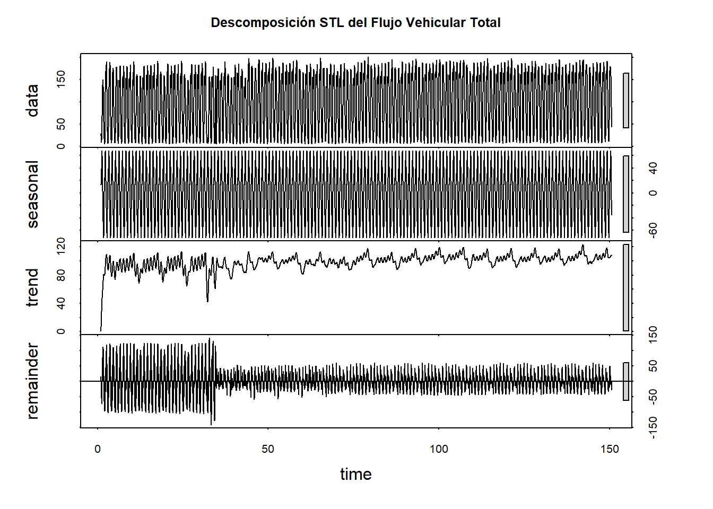
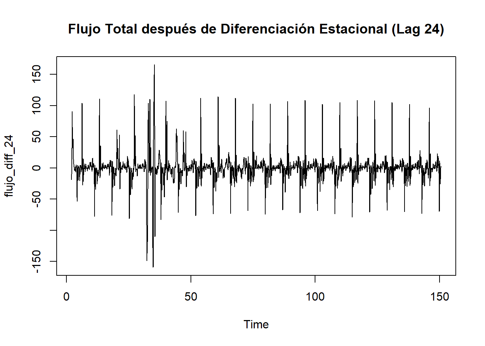

4 Capítulo 3
4.1 Descomposición de la Serie Temporal
Dado que la variable FlujoTotal presenta una clara estructura temporal y estacionalidad diaria, es necesario realizar un análisis de series temporales para descomponer sus componentes, evaluar su estacionariedad y, si es necesario, aplicar transformaciones para prepararla para el modelado predictivo
La descomposición permite separar la serie en sus componentes principales: Tendencia, Estacionalidad e Irregularidad (ruido o error). Utilizamos el método STL (Seasonal-Trend decomposition using Loess), que es robusto a valores atípicos.La descomposición permite separar la serie en sus componentes principales: Tendencia, Estacionalidad e Irregularidad (ruido o error). Utilizamos el método STL (Seasonal-Trend decomposition using Loess), que es robusto a valores atípicos.
La descomposición es vital para entender la naturaleza de los picos y valles observados en el Capítulo anterior y para confirmar si la variabilidad del ruido es constante a lo largo del tiempo.

Estacional: Muestra claramente el patrón diario consistente, con flujos altos en horas pico de la mañana y la tarde.
Tendencia: Muestra una ligera variación a largo plazo. Si bien no hay una tendencia lineal fuerte, la componente no es completamente plana.
Residual: Representa el componente irregular o ruido, que debería ser estacionario. Su magnitud parece ser relativamente constante, lo que simplifica el siguiente paso.
La descomposición STL revela una serie con fuerte componente estacional determinística y una tendencia suave pero significativa. El principal desafío estadístico es la heterocedasticidad residual, especialmente en el primer segmento de la serie. Esto sugiere que un modelo efectivo debería:
4.2 Estacionariedad y Diferenciación
Una serie de tiempo es estacionaria si sus propiedades estadísticas (media, varianza, autocovarianza) no cambian con el tiempo. La estacionariedad es un requisito fundamental para modelos como ARIMA. La fuerte estacionalidad y la ligera tendencia observadas sugieren que la serie NO es estacionaria.
Se aplica la prueba de Dickey-Fuller Aumentada (ADF) a la serie temporal de interés (por ejemplo, velocidad promedio o flujo total) para evaluar la presencia de una raíz unitaria, que es un indicador de no estacionariedad.
- Hipótesis Nula (\(H_0\)): La serie temporal NO es estacionaria (contiene una raíz unitaria).
- Hipótesis Alternativa (\(H_a\)): La serie temporal ES estacionaria.
## [1] "Resultado de la prueba de Dickey-Fuller Aumentada (ADF) para el Flujo Total:"##
## Augmented Dickey-Fuller Test
##
## data: flujo_ts
## Dickey-Fuller = -29.143, Lag order = 15, p-value = 0.01
## alternative hypothesis: stationary| Métrica | Valor |
|---|---|
| Estadístico ADF | -29.14 |
| Valor \(p\) | 0.01 |
| Nivel de Significación (\(\alpha\)) | \(0.05\) |
El valor \(p\) (\(p\)-value) de la prueba ADF es 0.01. Dado que este valor es menor a \(0.05\), rechazamos la hipótesis nula (\(H_0\)).
4.2.1 Test KPSS (Kwiatkowski-Phillips-Schmidt-Shin)
La prueba KPSS es complementaria al ADF. Su hipótesis nula (\(H_0\)) es que la serie ES estacionaria (alrededor de un nivel o una tendencia). Un p-value muy bajo indica que la serie es no estacionaria (rechaza \(H_0\)).
## [1] "KPSS Test (Null: Estacionaria en Nivel):"##
## KPSS Test for Level Stationarity
##
## data: flujo_ts
## KPSS Level = 0.45417, Truncation lag parameter = 9, p-value = 0.05381## [1] "KPSS Test (Null: Estacionaria en Tendencia):"##
## KPSS Test for Trend Stationarity
##
## data: flujo_ts
## KPSS Trend = 0.0069695, Truncation lag parameter = 9, p-value = 0.1Basándose en el rechazo de la \(H_0\) del test KPSS (confirmando no-estacionariedad) y los picos persistentes en los lags estacionales (24, 48, 72) de la ACF, se confirma que la serie requiere Diferenciación Estacional (\(D=1\), \(s=24\)) para remover la fuerte estacionalidad estocástica antes de la identificación del modelo SARIMA.
4.2.2 Diferenciación Estacional
Para remover la estacionalidad diaria se aplica la diferenciación estacional.

## [1] "Resultado de la prueba ADF para la serie estacionalmente diferenciada:"##
## Augmented Dickey-Fuller Test
##
## data: flujo_diff_24
## Dickey-Fuller = -15.225, Lag order = 15, p-value = 0.01
## alternative hypothesis: stationary4.2.3 Confirmación de Estacionariedad
La batería de pruebas estadísticas aplicadas proporciona evidencia concluyente sobre el comportamiento estocástico de la serie. La prueba de Dickey-Fuller Aumentada (ADF) arrojó un estadístico de -29.143 con un valor p de 0.01, rechazando contundentemente la hipótesis nula de presencia de raíz unitaria. Este resultado, complementado por las pruebas KPSS que mostraron valores marginales (p-value = 0.05381 para nivel y 0.1 para tendencia), confirma que la serie original presenta características mixtas de estacionariedad.
La diferenciación estacional con lag 24 se estableció como la transformación necesaria y suficiente para lograr estacionariedad plena. Tras aplicar esta diferenciación, la serie transformada exhibió un estadístico ADF de -15.225 (p-value = 0.01), confirmando que la serie diferenciada cumple con los requisitos de estacionariedad para la aplicación de modelos ARIMA estacionales (SARIMA).